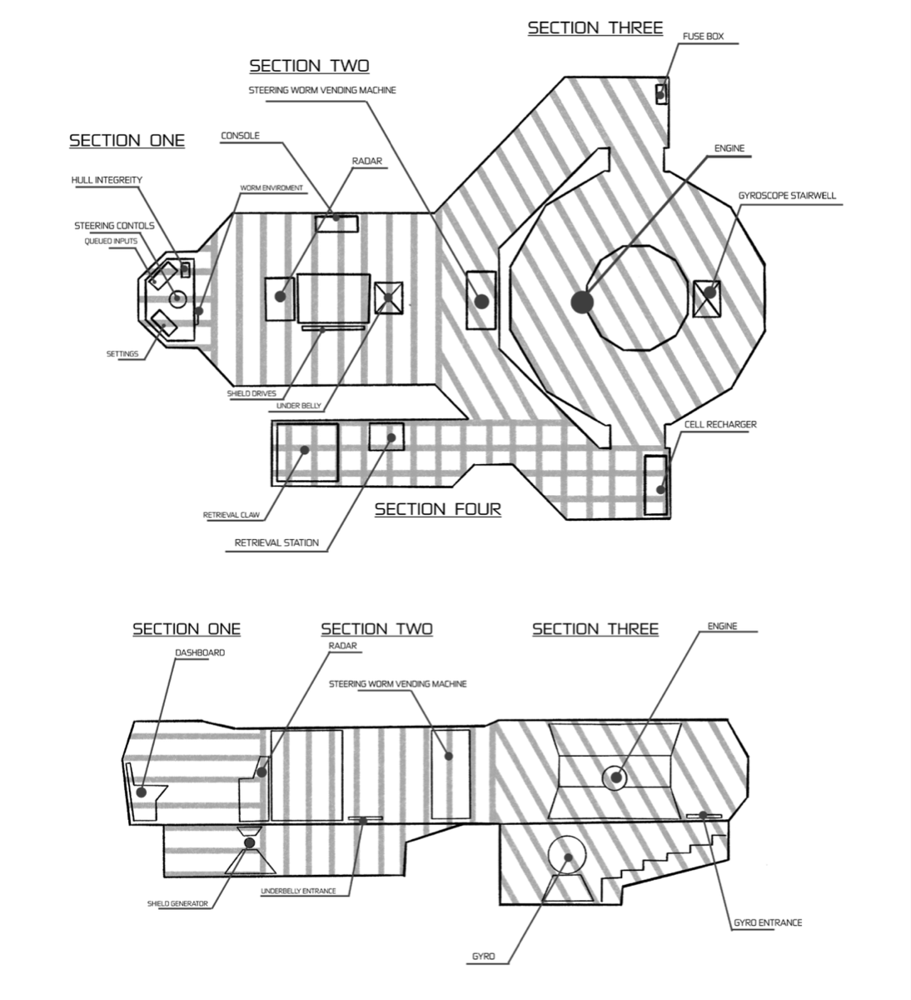
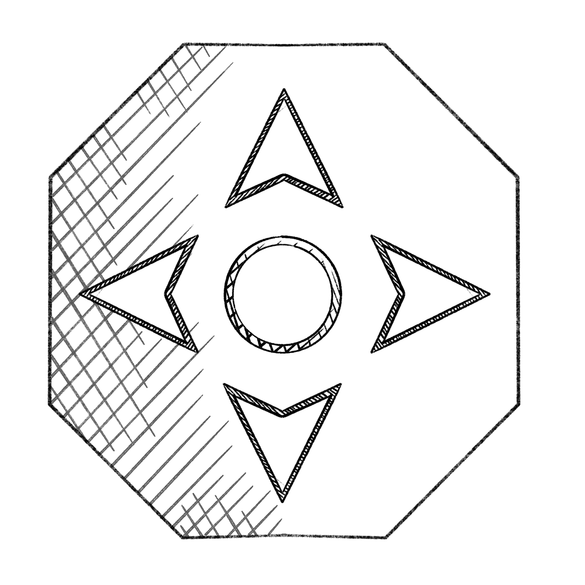
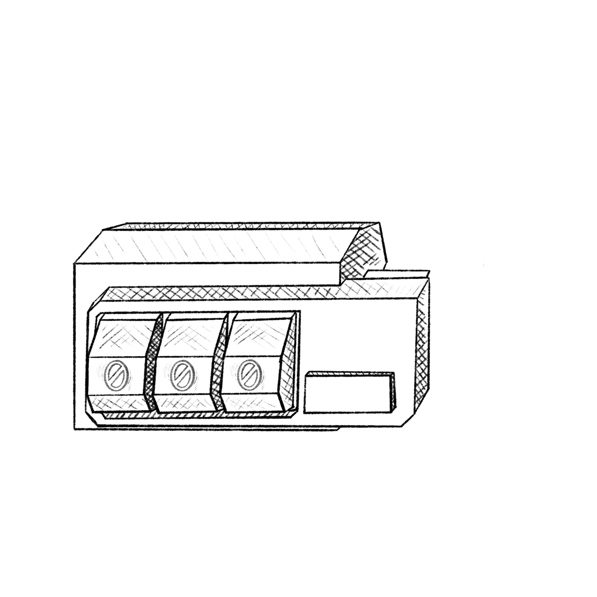
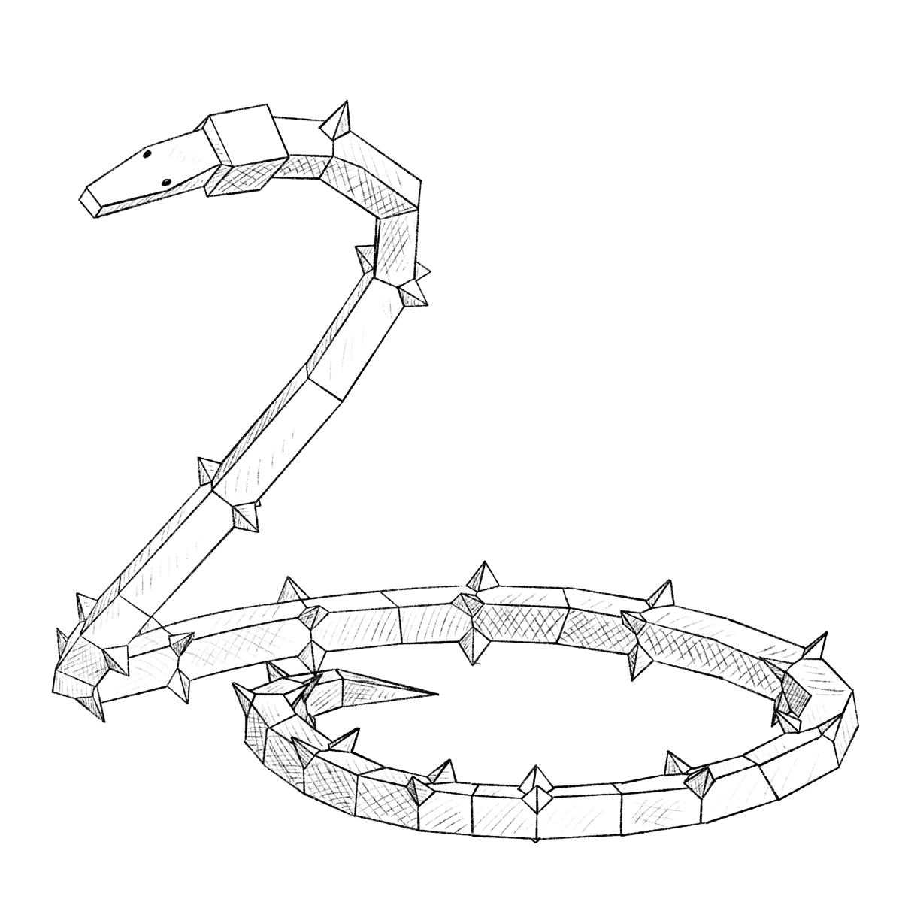

Projects
Design
Digital and UI design, research, worldbuilding and tabletop design.
Jump to a project
01 — Capstone · Co-op Game
We Have A Problem
We Have A Problem is a two-player co-op sci-fi escape game about communicating clearly. One player sits at the ship’s console and sees the system reports, which are cryptic on their own. The other holds the manual and has to match each report to the right repair instruction, then talk their partner through the fix. Neither player can get through it alone.
It’s a game, but my part of the capstone was mostly digital design. I designed the look of the console interface, including the navigation, radar, engine, fuel, shields and retrieval-system screens, so each system reads clearly at a glance while still feeling like part of the same ship.


Console interface


Worm

02 — Research · Worldbuilding
A World Designed: Soma
Soma 1 is a cube-shaped ship, 5 km on each side, built in orbit as a revered ark mission to carry life to new worlds. It lost its course and has drifted for so long that the mission has become an abstraction. Food, water, power and waste all cycle through one closed loop, nobody has left since the route was lost, and the whole society runs on a single rule: maintain the ship.
This was a research and writing project to build a world and the logic that holds it together. Five floors house five castes named for the senses: the Seen, the Felt, the Heard, the Eaten and the Stench. A colour palette reads the ship from top to bottom, from institutional blue down to near-black, with red kept for Root, the outside. The research drew on Kowloon Walled City, the Universe 25 mouse experiment, caste systems and the “Wall” storyline from Solar Opposites. The presentation sets out the world, and the process journal shows how it developed.
03 — Art Contribution
Isles
Artwork I made for Isles, a project led by someone else.
04 — Research · Game Design
Make the Cards, Not the Rules
A design-research proposal for a tabletop card game, bringing together research and early game design. The full proposal is below.